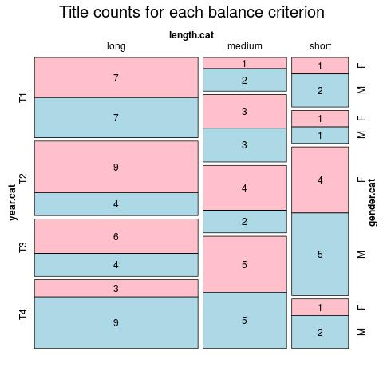

Click on a column heading to sort. Click on a text identifier to read the text (may not work in older browsers).
| Identifier | Encoding | Pages | Words | (Size) | Date (Slot) | Title | Author | Sex | Reprints |
|---|---|---|---|---|---|---|---|---|---|
| ENG18400 |
eltec-1 | 387 | 207300 | (long) | 1840 (T1) | The Life and Adventures of Michael Armstrong | Trollope, Frances Milton (1780-1863) | F | low |
| ENG18410 |
eltec-1 | 188876 | (long) | 1841 (T1) | Modern Flirtations | Sinclair, Catherine (1800-1864) | F | low | |
| ENG18411 |
eltec-1 | 87 | 34573 | (short) | 1844. (T1) | The Twins | Tupper, Martin Farquhar (1810-1889). | M | low |
| ENG18440 |
eltec-1 | 983 | 159046 | (long) | 1844 (T1) | Coningsby | Disraeli, Benjamin (1804-1881) | M | low |
| ENG18450 |
eltec-0 | 787 | 158160 | (long) | 1845 (T1) | Sybil, Or the Two Nations | Disraeli, Benjamin (1804-1881) | M | low |
| ENG18460 |
eltec-1 | 1182 | 839895 | (long) | 1846 (T1) | The mysteries of London | Reynolds, George William McArthur (1814-1879) | M | low |
| ENG18470 |
eltec-1 | 171250 | (long) | 1847 (T1) | Home Influence | Aguilar, Grace (1816-1847) | F | low | |
| ENG18471 |
eltec-1 | 764 | 115398 | (long) | 1847 (T1) | Wuthering Heights | Brontë, Emily (1818-1848) | F | high |
| ENG18480 |
eltec-1 | 298740 | (long) | 1848 (T1) | Vanity Fair | Thackeray, William Makepeace (1811-1863) | M | high | |
| ENG18481 |
eltec-0 | 348793 | (long) | 1848 (T1) | Dombey and Son | Dickens, Charles (1812-1870) | M | high | |
| ENG18482 |
eltec-1 | 161538 | (long) | 1848 (T1) | Mary Barton | Gaskell, Elizabeth Cleghorn (1810-1865) | F | high | |
| ENG18490 |
eltec-1 | 188 | 39873 | (short) | 1849 (T1) | The Inheritance of Evil | Skene, Felicia (1821-1899) | F | low |
| ENG18500 |
eltec-1 | 46373 | (short) | 1850 (T1) | Auriol, or The elixir of life | Ainsworth, William Harrison (1805-1822) | M | low | |
| ENG18510 |
eltec-1 | 95902 | (medium) | 1851 (T1) | Yeast | Kingsley, Charles (1819-1875) | M | low | |
| ENG18511 |
eltec-1 | 631 | 99479 | (medium) | 1851 (T1) | The Tutor’s Ward | Skene, Felicia (1821-1899) | F | low |
| ENG18530 |
eltec-1 | 575 | 325604 | (long) | 1853 (T1) | Bleak House | Dickens, Charles (1812-1870) | M | high |
| ENG18531 |
eltec-1 | 726 | 233764 | (long) | 1853 (T1) | The Heir of Redclyffe | Yonge, Charlotte Mary (1823-1901) | F | low |
| ENG18540 |
eltec-1 | 104105 | (long) | 1854 (T1) | Hard Times | Dickens, Charles (1812-1870). | M | high | |
| ENG18551 |
eltec-0 | 335 | 71911 | (medium) | 1855 (T1) | The Warden | Trollope, Anthony (1815-1882) | M | high |
| ENG18552 |
eltec-1 | 48639 | (short) | 1856 (T1) | Rachel Gray | Kavanagh, Julia (1824-1877). | F | low | |
| ENG18560 |
eltec-1 | 663 | 296590 | (long) | 1856 (T1) | The Daisy Chain | Yonge, Charlotte Mary (1823-1901) | F | low |
| ENG18570 |
eltec-1 | 87978 | (medium) | 1857 (T1) | The Professor | Brontë, Charlotte (1816-1855). | F | high | |
| ENG18600 |
eltec-1 | 334 | 56726 | (medium) | 1860 (T2) | Why Paul Ferroll Killed His Wife | Clive, Caroline Wigley (1801-1873) | F | low |
| ENG18610 |
eltec-0 | 364 | 71043 | (medium) | 1861 (T2) | Silas Marner | Eliot, George [pseud.] (1819-1880) | F | high |
| ENG18621 |
eltec-0 | 148971 | (long) | 1862 (T2) | Lady Audley's Secret | Braddon, Mary Elizabeth (1835-1915). | F | high | |
| ENG18630 |
eltec-0 | 109497 | (long) | 1863 (T2) | Mistress and Maid | Craik, Dinah Marie (1826-1887) | F | low | |
| ENG18632 |
eltec-1 | 259251 | (long) | 1863 (T2) | Hard Cash. A matter of fact romance | Reade, Charles (1814-1884). | M | low | |
| ENG18640 |
eltec-1 | 195823 | (long) | 1864 (T2) | Clara Vaughan | Blackmore, Richard Doddridge (1825-1900) | M | low | |
| ENG18641 |
eltec-1 | 44735 | (short) | 1864 (T2) | Fern's Hollow | Stretton, Hesba [pseud Sara Smith] (1832-1911). | F | low | |
| ENG18650 |
eltec-1 | 644 | 305740 | (long) | 1865 (T2) | Can You Forgive Her? | Trollope, Anthony (1815-1882) | M | high |
| ENG18651 |
eltec-1 | 181915 | (long) | 1865 (T2) | The Clever Woman of the Family | Yonge, Charlotte Mary (1823-1901). | F | low | |
| ENG18652 |
eltec-1 | 26391 | (short) | 1865 (T2) | Alice's Adventures in Wonderland | Carroll, Lewis [pseud.] (1832-1898). | M | high | |
| ENG18660 |
eltec-1 | 878 | 181371 | (long) | 1866 (T2) | Felix Holt, the Radical | Eliot, George [pseud.] (1819-1880) | F | high |
| ENG18661 |
eltec-1 | 207241 | (long) | 1866 (T2) | Miss Marjoribanks | Oliphant, Margaret (1828–1897) | F | low | |
| ENG18670 |
eltec-1 | 993 | 246466 | (long) | 1867 (T2) | Under Two Flags | Ouida, [pseud.] (1839-1908) | F | high |
| ENG18700 |
eltec-1 | 70524 | (medium) | 1870 (T2) | Piccadilly | Oliphant, Laurence (1829-1888) | M | low | |
| ENG18702 |
eltec-1 | 31902 | (short) | 1871 (T2) | Ginx's Baby | Jenkins, John Edward (1838-1910). | M | low | |
| ENG18720 |
eltec-1 | 281 | 38286 | (short) | 1872 (T2) | The True History of Joshua Davidson | Linton, Elizabeth Lynn (1822-1898) | F | low |
| ENG18721 |
eltec-1 | 316163 | (long) | 1872 (T2) | Middlemarch | Eliot, George [pseud.] (1819-1880) | F | high | |
| ENG18740 |
eltec-0 | 54444 | (medium) | 1874 (T2) | Two Little Wooden Shoes | Ouida, [pseud.] (1839-1908) | F | low | |
| ENG18741 |
eltec-1 | 252553 | (long) | 1874 (T2) | The Parisians | Lytton, Edward Bulwer (1803-1873) | M | low | |
| ENG18742 |
eltec-1 | 40527 | (short) | 1874 (T2) | Harry Heathcote of Gangoil | Trollope, Anthony (1815-1882). | M | low | |
| ENG18760 |
eltec-1 | 88959 | (medium) | 1876 (T2) | The Two Destinies | Collins, Wilkie (1824-1889) | M | low | |
| ENG18770 |
eltec-1 | 77630 | (medium) | 1877 (T2) | The New Republic | Mallock, William Hurrell (1849-1923) | M | low | |
| ENG18800 |
eltec-0 | 171240 | (long) | 1880 (T3) | Endymion | Disraeli, Benjamin (1804-1881) | M | low | |
| ENG18820 |
eltec-1 | 283 | 93483 | (medium) | 1882 (T3) | Vice Versa | Anstey, F. [pseud.] (1856-1934) | M | high |
| ENG18830 |
eltec-1 | 877 | 138769 | (long) | 1883 (T3) | Belinda | Broughton, Rhoda (1840-1920) | F | low |
| ENG18831 |
eltec-1 | 495 | 190954 | (long) | 1883 (T3) | Folle-Farine | Ouida, [pseud.] (1839-1908) | F | low |
| ENG18840 |
eltec-1 | 949 | 151035 | (long) | 1884 (T3) | Miss Brown | Lee, Vernon (1856-1935) | F | low |
| ENG18850 |
eltec-1 | 159 | 38448 | (short) | 1885 (T3) | Mark Rutherford's Deliverance | White, William Hale (1831-1913). | M | high |
| ENG18860 |
eltec-1 | 117516 | (long) | 1886 (T3) | The Mayor of Casterbridge | Hardy, Thomas (1840-1928). | M | high | |
| ENG18870 |
eltec-1 | 854 | 217210 | (long) | 1887 (T3) | The New Antigone | Barry, William Francis (1849-1930) | M | low |
| ENG18871 |
eltec-1 | 464 | 136391 | (long) | 1887 (T3) | Red as a rose is she | Broughton, Rhoda (1840-1920) | F | low |
| ENG18872 |
eltec-1 | 14002 | (short) | 1887 (T3) | The Autobiography of a Slander | Lyall, Edna [pseud.] (1857-1903). | F | low | |
| ENG18890 |
eltec-0 | 320 | 97965 | (medium) | 1889 (T3) | The Prophet's Mantle | Nesbit, Edith (1858-1924) | F | low |
| ENG18900 |
eltec-0 | 282 | 43111 | (short) | 1890 (T3) | The Sign of Four | Doyle, Arthur Conan (1678-1799) | M | high |
| ENG18901 |
eltec-1 | 149508 | (long) | 1890 (T3) | Alas! A Novel | Broughton, Rhoda (1840-1920). | F | low | |
| ENG18910 |
eltec-1 | 151 | 24676 | (short) | 1891 (T3) | John Sherman and Dhoya | Yeats, William Butler (1865–1939) | M | low |
| ENG18911 |
eltec-1 | 958 | 187538 | (long) | 1891 (T3) | New Grub Street | Gissing, George (1857-1903). | M | high |
| ENG18920 |
eltec-1 | 218 | 42280 | (short) | 1892 (T3) | The diary of a nobody | Grossmith, George (1847-1912) | M | high |
| ENG18930 |
eltec-1 | 82117 | (medium) | 1893 (T3) | Dodo | Benson, Edward Frederic (1867-1940). | M | low | |
| ENG18931 |
eltec-1 | 37485 | (short) | 1893 (T3) | Ships that Pass in the Night | Harraden, Beatrice (1864-1936). | F | low | |
| ENG18940 |
eltec-1 | 270 | 56152 | (medium) | 1894 (T3) | The Story of a Modern Woman | Dixon, Ella Hepworth (1855-1932) | F | low |
| ENG18941 |
eltec-1 | 487 | 154953 | (long) | 1894 (T3) | The Daughters of Danaus | Caird, Mona (1854-1932) | F | low |
| ENG18950 |
eltec-1 | 160 | 23315 | (short) | 1895 (T3) | The Woman Who Didn't | Cross, Victoria (1868-1952) | F | low |
| ENG18951 |
eltec-1 | 140 | 23459 | (short) | 1895 (T3) | The Story of Bessie Costrell | Ward, Humphry, Mrs. (1851-1920) | F | low |
| ENG18952 |
eltec-1 | 153 | 32495 | (short) | 1895 (T3) | The Time Machine | Wells, Herbert George (1866-1946) | M | high |
| ENG18953 |
eltec-1 | 93900 | (medium) | 1895 (T3) | Lilith; A Romance | MacDonald, George (1824-1905). | M | high | |
| ENG18954 |
eltec-1 | 36663 | (short) | 1895 (T3) | At the Relton Arms | Sharp, Evelyn (1869-1955) | F | low | |
| ENG18960 |
eltec-1 | 296 | 61640 | (medium) | 1896 (T3) | The Carissima | Malet, Lucas (1852-1931) | F | low |
| ENG18961 |
eltec-0 | 35173 | (short) | 1896 (T3) | The Rome Express | Griffiths, Major Arthur George Frederick (1838-1908). | M | low | |
| ENG18970 |
eltec-1 | 123119 | (long) | 1897 (T4) | Lying Prophets | Phillpotts, Eden (1862-1960) | M | low | |
| ENG18972 |
eltec-0 | 342 | 147762 | (long) | 1897 (T3) | The water of the wondrous isles | Morris, William (1834-1896) | M | low |
| ENG18973 |
eltec-1 | 211 | 25890 | (short) | 1897 (T3) | A Devotee | Cholmondeley, Mary (1859-1925). | F | low |
| ENG18980 |
eltec-1 | 362 | 89901 | (medium) | 1898 (T3) | Domitia | Baring-Gould, Sabine (1834-1924) | F | low |
| ENG19001 |
eltec-1 | 57168 | (medium) | 1900 (T4) | The Visits of Elizabeth | Glyn, Elinor (1864-1943). | F | low | |
| ENG19004 |
eltec-1 | 367 | 104660 | (long) | 1900 (T4) | The Farringdons | Fowler, Ellen Thorneycroft (1860-1929). | F | low |
| ENG19005 |
eltec-1 | 115902 | (long) | 1900 (T4) | The Hosts of the Lord | Steel, Flora Annie (1847-1929). | F | low | |
| ENG19010 |
eltec-1 | 89033 | (medium) | 1901 (T4) | Clementina | Mason, Alfred Edward Woodley (1865-1948) | M | low | |
| ENG19011 |
eltec-1 | 167 | 25232 | (short) | 1901 (T4) | The Observations of Henry | Jerome, Jerome K. (1859-1927) | M | low |
| ENG19020 |
eltec-1 | 287 | 56931 | (medium) | 1902 (T4) | The Red House | Nesbit, Edith (1858-1924) | F | low |
| ENG19030 |
eltec-1 | 21780 | (short) | 1903 (T4) | Penelope Brandling | Lee, Vernon [pseud. Violet Paget] (1856-1935). | F | low | |
| ENG19060 |
eltec-1 | 368 | 68607 | (medium) | 1906 (T4) | The Story of the Amulet | Nesbit, Edith (1858-1924) | F | high |
| ENG19070 |
eltec-1 | 309 | 65739 | (medium) | 1907 (T4) | The Hill of Dreams | Machen, Arthur (1867-1947) | M | low |
| ENG19071 |
eltec-0 | 364 | 115274 | (long) | 1907 (T4) | The good comrade | Silberrad, Una Lucy (1872-1955). | F | low |
| ENG19080 |
eltec-1 | 57988 | (medium) | 1908 (T4) | The man who was Thursday | Chesterton, Gilbert Keith (1874-1936) | M | high | |
| ENG19090 |
eltec-1 | 133529 | (long) | 1909 (T4) | Tono-bungay | Wells, Herbert George (1866-1946) | M | high | |
| ENG19091 |
eltec-1 | 323 | 64992 | (medium) | 1909 (T4) | Daphne, or Marriage a la Mode | Ward, Humphry, Mrs. (1851-1920) | F | low |
| ENG19100 |
eltec-1 | 245 | 109810 | (long) | 1910 (T4) | Howards End | Forster, Edward Morgan (1879-1970) | M | high |
| ENG19111 |
eltec-1 | 316 | 71393 | (medium) | 1911 (T4) | The Camera Fiend | Hornung, Ernest William (1866-1921) | M | low |
| ENG19120 |
eltec-1 | 521 | 146501 | (long) | 1912 (T4) | Marriage | Wells, Herbert George (1866-1946) | M | low |
| ENG19121 |
eltec-1 | 316 | 87083 | (medium) | 1912 (T4) | The Chink in the Armour | Belloc-Lowndes, Marie (1868-1947) | F | low |
| ENG19150 |
eltec-0 | 221 | 40892 | (short) | 1915 (T4) | The Thirty-nine Steps | Buchan, John (1875-1940) | M | high |
| ENG19170 |
eltec-1 | 197 | 39758 | (short) | 1917 (T4) | The shadow-line | Conrad, Joseph (1857-1924) | M | high |
| ENG19180 |
eltec-1 | 270 | 99954 | (medium) | 1918 (T4) | Tarr | Lewis, Percy Wyndham (1882-1957) | M | high |
| ENG19190 |
eltec-1 | 264 | 43395 | (short) | 1919 (T4) | Living Alone | Benson, Stella (1892-1933) | F | low |
| ENG19191 |
eltec-1 | 61377 | (medium) | 1919 (T4) | William — an Englishman | Hamilton, Cicely (1872-1952) | F | low | |
| ENG19192 |
eltec-0 | 166198 | (long) | 1919 (T4) | Night and day | Woolf, Virginia (1882-1941) | F | high | |
| ENG19200 |
eltec-0 | 180153 | (long) | 1920 (T4) | Women in love | Lawrence, David Herbert (1885-1930) | M | high | |
| ENG19201 |
eltec-1 | 169 | 33085 | (short) | 1920 (T4) | The London venture | Arlen, Michael [pseud.] (1857-1924) | M | low |